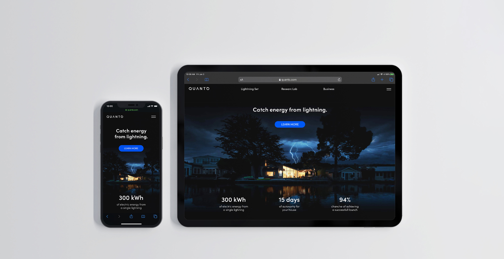

Giacomo
Bozzato
Bozzato


Hi! 👋 I'm a UI designer and photographer from Italy, now based in Sydney, focused on visual storytelling for environment-aware and purpose-driven creative projects.
Quanto
branding
2021
Together with some fellow students I designed the visual identity of Quanto, an hypothetical brand in the field of renewable energy production and distribution. This company would provide both consumers and businesses with a sustainable source of energy through a high-tech equipment that can capture and harvest electricity from lightning strikes.
